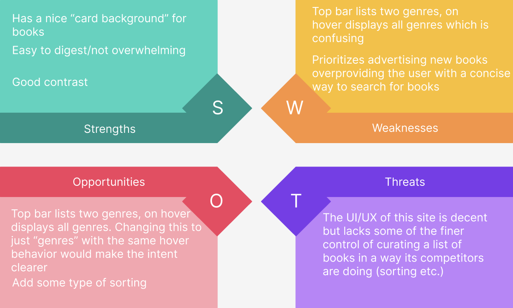

Goal:
To do a competive analysis of storefront websites and incoroporate the best elements from these websites and
implement them myself to build my React skills. In particular, features pertaining to filtering and sorting items. You can find my complete implementation
here.
Competetive Analysis:
I chose to create a bookstore so I needed to look at some similar websites and perform my competetive
analysis. I have below three different websites. For each of them I have performed a SWOT (Strength, Weekness, Opportunity, Threat) analysis. Finally, below those three SWOT analyses
is a summary and competetive analysis chart.

Barnes & Noble is a very recognizable brand whose website surely sees a lot of traffic. For
this reason their UI/UX can be slightly less developed than their competetors. Their site is fairly standard and does not present many suprises but does feature a few
distracting elements and banners that border on annoying.

Bookshop.org has a very digestable website with solid filtering options but totally lacks any way to
sort those filtered results by price, rating, etc. Overall, a good site that is missing a few features to take its UI/UX from good to great.

Symposium Books is a smaller retailer but their site's UI/UX is admirable. They have great filtering
options in addition to sorting support. Besides a couple of contrast errors and features for a few edge cases, it is a solid site.
Summary:

All these sites had the functionality for filtering based on genre which is a very important
category when considering books. But none of them provided searching based on language or the ability to filter based on more than one criteria which I found a bit odd. Only Bymposium Books allowed for sorting by price which
again was strange. As an avid reader myself I am always on the lookout for a cheap book so that feauture strikes me as an important one. Overall, the sites that gave me the best
impressions had good color palettes, strong contrast, and thoughtful features. For these reasons I decided to implement sorting by language and genre as well as sorting by price.
Additionally, I took special care to choose a good color palette and use are card format for my book "items" in my storefront.